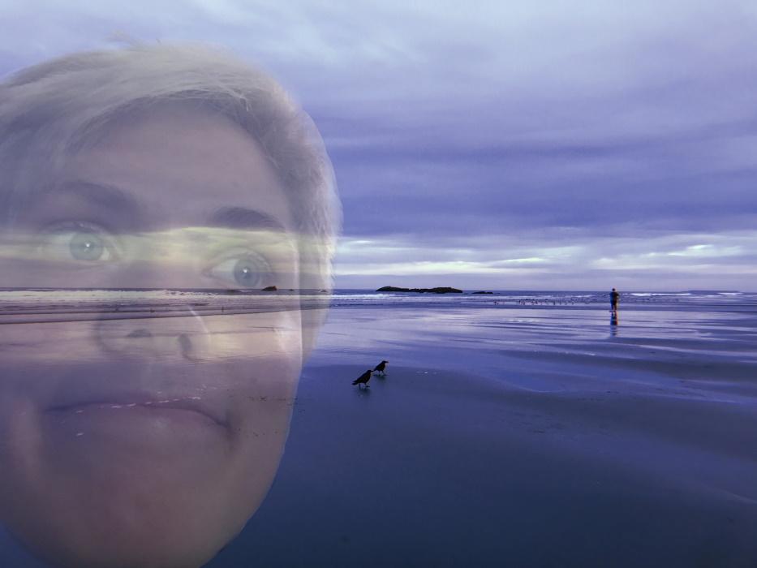

I used Clip Studio Paint to make all of my images.
For this image, I cut my face out of a photo, pasted it over a photo I took of the Pacific Ocean, and lowered its opacity.

Here I started with a picture of David Lynch's 2006 "FOR YOUR CONSIDERATION LAURA DERN" Oscar ad (source). I used the blur and airbrush tools to edit out Mrs. Dern (sorry Mrs. Dern), then cut out an image of myself holding a Madeleine tin, pasted it in, and added my name.
I created 10 layers of the same image. I turned the opacity of each layer down so all were somewhat visible over each other, and then applied the mosaic filter at decreasing intensities from the lowest layer to the top. I then played with the colors of each layer and deleted vertical sections of upper layers.